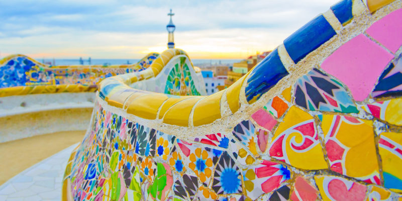
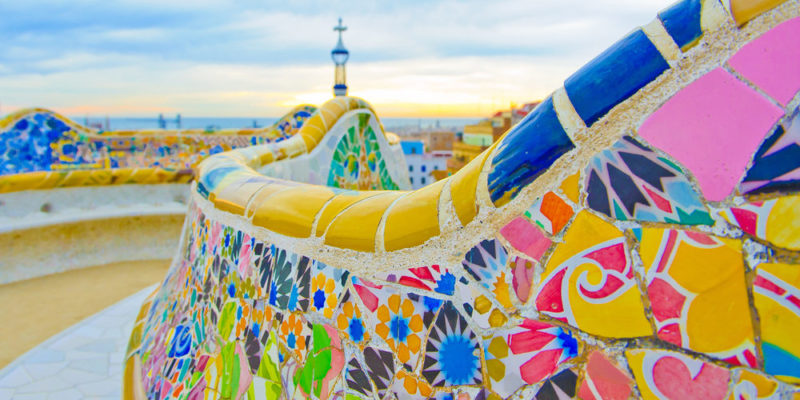

Esta es la página web de Ana del Pino.
Aquí se trataran contenidos sobre la corriente del Modernismo.
El boilerplate es la estructura del archivo html. Lo podemos ver desde el navegador presionando F12.
Las etiquetas h1 a h6 sirven para diferenciar los distintos textos, modificando su tamaño.
El Modernismo es una corriente literaria que surgió como una rebelión a el realismo y el naturalismo.
El Modernismo llega a España hacia el año 1888, desde Hispanoamérica gracias a Rubén Darío.
Valle-Inclán, Rubén Darío, JRJ, los Machado.
El comando < br>, sirve para hacer saltos de línea.
Una poesía característa es:
El cielo está enladrillado, Cuando se introduce un texto entre < em> y < /em>, este aparecerá en cursiva:
El principal precursor del Modernismo fue Rubén Darío
Cuando se introduce un texto entre < strong> y < /strong>, este aparecerá en negrita:
Rubén Darío sorprendió a todos los escritores de la época con su estilo en el que ese realismo quedaba olvidado y era un arte más estético.
Sirve para hacer listas no ordenadas (Unordered List).
Para cada elemento de la lista, se pone entre < li> y < /li>.
Sirve para hacer listas ordenadas.
Se usa también < li>< /li>.
Se usa para añadir imágenes a nuestra página web.
Se escribe < img scr="url de la imágen" alt="Descripción de la foto" width="ancho de la foto">
El máximo representante de esta correinte es Rubén Darío:
 
